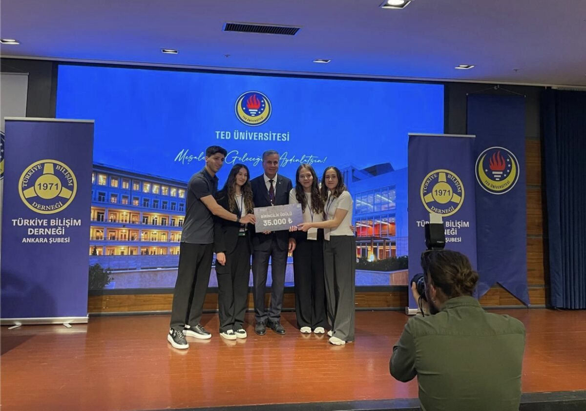

Outcome Built the pipeline that turns raw public-cohort scans into training-ready PET–MRI pairs, and automated the origin fix that unblocked scans failing registration.
The project. A research team at TED University, working with neurology and nuclear medicine physicians, is applying deep learning to amyloid PET and MRI to support the analysis of Alzheimer's disease. I joined through the Department of Computer Engineering and contribute as a volunteer.
My part, as an intern. My internship at Godetya in January and February 2026 was on this project. I built the imaging data pipeline that takes the scans all the way to training-ready data: downloading and cleaning scans from public research cohorts, matching each MRI with its PET scan and clinical labels, and preprocessing both in MATLAB and SPM (registration, spatial normalisation, intensity standardisation and brain masking). When registration failed on some scans, I traced it to wrong image origins and automated the correction. I documented each stage in reports for the team.
My part, as a volunteer. After the internship, I extended the same pipeline to more public cohorts, and I train and evaluate the 3D models on the prepared data together with the team.
Collect. Download MRI, amyloid PET and clinical labels from public research cohorts, then clean them: scans that are incomplete or unusable are dropped before anything else happens.
Tools: Python, PyTorch, PyTorch Lightning, MONAI, ResNet3D, Vision Transformers, MATLAB, SPM, NIfTI, DICOM.
